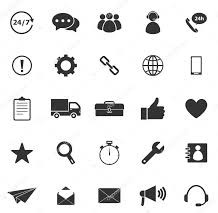

Our Services
We offer a variety of programs designed to make technology education accessible, engaging, and impactful.
Search Programs
- Digital Skills Training
- Technology Workshops
- Mentorship Programs
- Community Outreach
Digital Skills Training
Interactive courses in computer literacy, Microsoft Office, internet safety, and introductory coding for beginners.
Technology Workshops
Hands-on events where students learn coding, robotics, and app development, hosted in schools and community libraries.
Mentorship Programs
Youth are paired with IT professionals who provide career guidance, project support, and personal development advice.
Community Outreach
Our mobile digital classrooms bring free training to rural and underserved areas, ensuring no student is left behind.
Upcoming Features
- Online learning portal with free coding lessons, video tutorials, and downloadable resources.
- Volunteer sign-up platform to connect mentors with students.
- Event calendar showcasing workshops and hackathons.